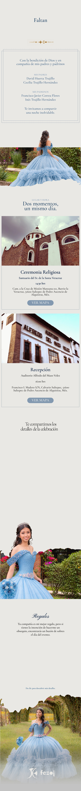

000
DÍAS
00
HRS
00
MIN
00
SEG
14:30 hrs
Celebración Religiosa
16:00 hrs
Recepción
16:30 hrs
Sagrados Alimentos
17:30 hrs
Fotos
18:30 hrs
Inauguración de la mesa de dulces
19:00 hrs
Pastel
19:30 hrs
Vals
21:00 hrs
¡A bailar!
Lluvia de sobres
Un detalle en efectivo
Regalo tradicional
Un obsequio con cariño
←
Portada
♫
Reproducir música